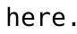

# encoding=utf-8 #import jya #from jya import get_file_names import re def get_file_names(): afile = open("/tmp/anl", 'r') file2str = afile.read() afile.close() todos = re.split(r'\n[\n\s]*\n', file2str) chops = [] test_a = [] for p in todos: lines = p.split('\n') my_lines = [] for l in lines: striped = l.strip() if striped: my_lines.append(striped) pass pass test_a.append(my_lines) # 1 line: name of the file # 2 line: chinese name of it if len(my_lines) == 2: one = dict(name=my_lines[0], cname=my_lines[1]) chops.append(one) pass return chops #################### base = '/tmp/ttaa/' wait(3) files = get_file_names() for f in files: #f0 = files[0] find() click(Pattern().targetOffset(48,0)) type(Key.ENTER) type('/') fullfilename = base + f['name'] type(fullfilename) type(Key.ENTER) paste(f['cname'])